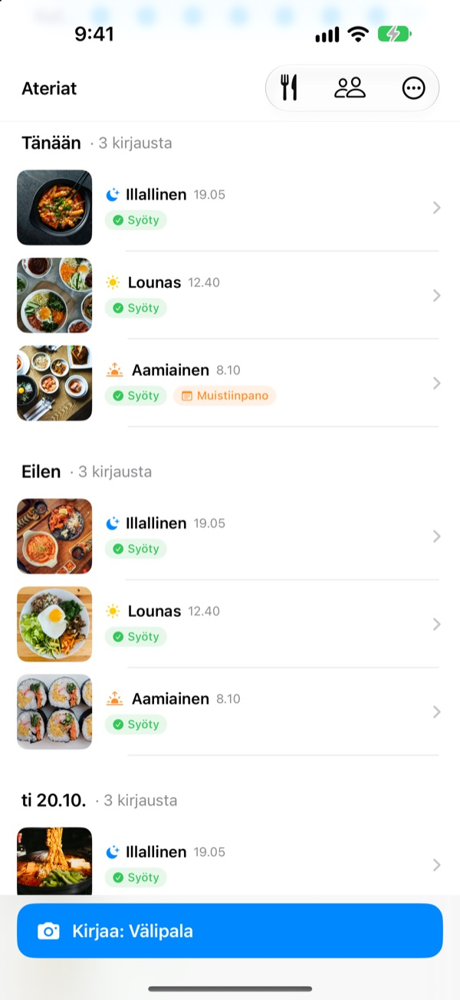
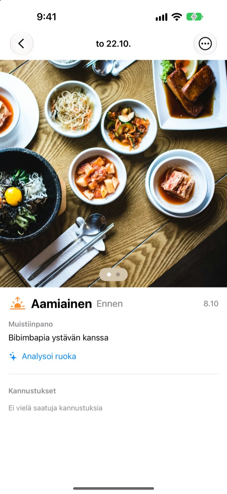
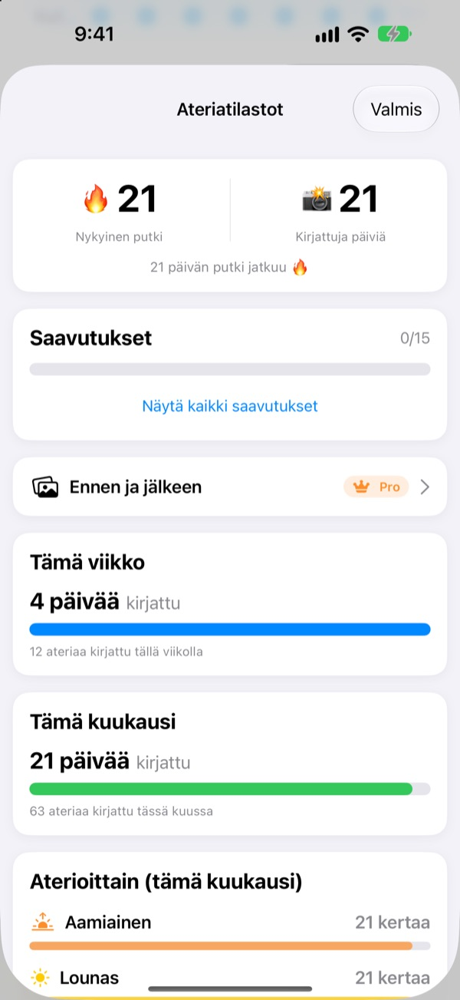
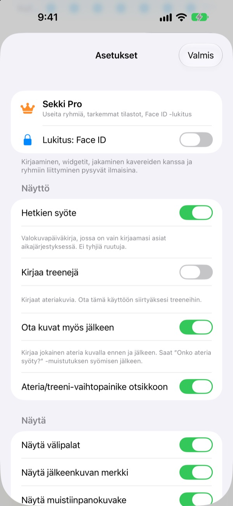

Yksi kuva ennen syömistä.
Siinä se.
Sekki katsoo, milloin kuva otettiin, ja lajittelee sen aamiaiseksi, lounaaksi, illalliseksi tai välipalaksi. Kirjaa vaikka vain yksi ateria päivässä, niin putkesi jatkuu.
Kirjaaminen, tilastot, widgetit ja jakaminen kavereille ovat ilmaisia.

Kokeile itse
Valitse kellonaika ja napauta kirjauspainiketta. Kuten sovelluksessa, painike kertoo jo kyseisen ajan aterian.
Jäikö ruokapäiväkirja kolmen päivän kokeiluksi?
Jätät aamiaisen väliin, unohdat illallisen, ja tyhjät ruudut alkavat ärsyttää, kunnes poistat sovelluksen. Sekissä ei ole tyhjiä ruutuja. Vain kirjaamasi ateriat kertyvät järjestyksessä, ja yksi kuva riittää siihen, että päivä lasketaan.
Ota kuva, niin ateria on paikallaan
Kuvausajan perusteella Sekki lajittelee kuvan aamiaiseksi, lounaaksi, illalliseksi tai välipalaksi. Lisää kuvat ennen ja jälkeen, kirjaa ilman kuvaa tai kirjoita muistiinpano.
Ruoka tunnistetaan ilmaiseksi laitteella, eivätkä kuvasi koskaan lähde puhelimesta.

Päiväkirja, joka ei koskaan kutistu
Yksi ateria päivässä pitää putken, eikä kirjattujen päivien kokonaismäärä koskaan laske. Viikko- ja kuukausitilastot näyttävät, montako päivää ja ateriaa olet kirjannut, eivät prosenttia.
Matkan varrella keräät saavutuksia, kuten 7 päivän putki ja Aamuvirkku.

Vain valitsemasi ateriat, avaamatta sovellusta
Valitse, mistä aterioista haluat muistutuksen, ja sovita ajat päivääsi. Kun olet ottanut kuvan ennen syömistä, merkitset Syöty suoraan ilmoituksesta.
Kirjaa myös Toimintopainikkeella, Sirillä, Pikakomennoilla tai widgetillä, ja lisää kavereita koodilla, niin voitte kannustaa toisianne emojeilla ja kommenteilla.

Alkuun kolmella askeleella
- 1
Valitse ateriat
Ensimmäisellä kerralla Sekki kysyy, mistä aterioista muistuttaa. Voit muuttaa sitä asetuksissa.
- 2
Kuva ennen syömistä
Kirjauspainikkeessa lukee jo nykyisen ajan ateria. Napauta, kuvaa, valmis.
- 3
Napauta, kun olet syönyt
Napauta Syöty ilmoituksessa tai widgetissä, tai lisää kuva jälkeenpäin.
Kirjaaminen avaamatta sovellusta
- Ilmoitus
- Kuvan jälkeen merkitse Syöty suoraan ilmoituksesta
- Kotinäytön widget
- Näe päivän kirjaukset ja meneillään oleva ateria, ja napauta Syöty
- Lukitusnäytön widgetit
- Suorakulmainen, pyöreä ja rivinä
- Toimintopainike · Siri · Pikakomennot
- Syöty yhdellä painalluksella tai lauseella
- Tallennus Kuviin
- Laita päälle asetuksista, niin ateriat ja treenit tallentuvat omiin Sekki-albumeihinsa
- Treenitila
- Treenit pysyvät erillään aterioista, ja kuun treenimäärä näkyy heti
Widgetin Syöty-painike vaatii iOS 17:n tai uudemman.
Kirjaaminen on ilmaista. Sekki Pro menee syvemmälle.
Ilmainen
- Kuvakirjaus automaattisella lajittelulla, kuvat ennen ja jälkeen, muistiinpanot
- Putket, päivät yhteensä, viikko- ja kuukausitilastot, saavutukset
- Muistutukset valituista aterioista ja Syöty avaamatta sovellusta
- Widgetit, Toimintopainike, Siri ja Pikakomennot
- Aterioiden ja treenien jakaminen kavereille, emojit ja kommentit
- Yhden ryhmän luominen, liittyminen niin moneen kuin haluat
- Ruoan tunnistus laitteella
Sekki Pro
- Useita ryhmiä perheelle, työpaikalle tai treeniporukalle
- Vertaa muutaman viikon takaisia aterioita tämänpäiväisiin rinnakkain
- Näe, mitä syöt useimmin
- Lukitse sovellus Face ID:llä tai Touch ID:llä
Vuosi- tai kuukausitilaus tai kertaosto loppuelämäksi
Tilaus uusiutuu automaattisesti, ellei sitä peruta vähintään 24 tuntia ennen jakson päättymistä. Peru milloin tahansa: Asetukset > Apple-tili > Tilaukset. Käyttöehdot: m1zz.github.io/RoutineCamera/fi/terms.html
Usein kysyttyä
Mihin kuvani tallennetaan?
Laitteellesi. Jos laitat asetuksista päälle Tallenna Kuviin automaattisesti, ne tallentuvat myös Kuvien Sekki-albumeihin. Niin kauan kuin Jaa ateriani on päällä (se on aluksi päällä), ne ladataan iCloudiin, jotta lisäämäsi kaverit näkevät ne. Voit laittaa sen pois kohdassa Asetukset > Tili ja jakaminen.
Miten lisään kavereita?
Jaa Kaverit-näytöllä kuusimerkkinen koodisi ja syötä kaverisi koodi. Voit liittää useita koodeja kerralla pilkuilla erotettuina.
Miten kannustan kaveria?
Avaa kaverin ateria ja jätä emoji tai lyhyt kommentti. Jos kaveri ei ole vielä kirjannut mitään, napauta tyhjää ruutua ja tönäise kevyesti.
Katkeaako putki, jos jätän aterian väliin?
Ei. Kirjaa sinä päivänä mikä tahansa ateria, välipalat mukaan lukien, ja putki jatkuu. Vaikka koko päivä jäisi väliin, kirjattujen päivien kokonaismäärä ei laske.
En saa ilmoituksia.
Tarkista iOS:n Asetukset > Ilmoitukset, että Sekin ilmoitukset on sallittu ja että laite on kirjautunut iCloudiin. Muistutusten ajat muutat sovelluksen asetuksista.
Lähettääkö ruoan tunnistus kuvani palvelimelle?
Ei. Se tapahtuu laitteella, joten kuvat eivät koskaan lähde puhelimesta. Ilmainen ja rajaton.
Miten poistan tilini ja tietoni?
Kohdassa Kaverit > Tili > Poista tili. Tili ja palvelimelle tallennetut ateriatiedot poistetaan, eikä niitä voi palauttaa. Jos jokin menee pieleen, lähetä meille sähköpostia.
Miten peruutan tilauksen?
Kohdassa Asetukset > Apple-tili > Tilaukset. Se uusiutuu automaattisesti, ellet peru sitä vähintään 24 tuntia ennen jakson päättymistä. Elinikäinen osto maksetaan kerran.
Virheet, ideat ja tiliä koskevat kysymykset: kirjoita osoitteeseen leeo@kakao.com tai lähetä DM Instagramissa @lee25_ios. Vastaamme yleensä päivän tai kahden sisällä.